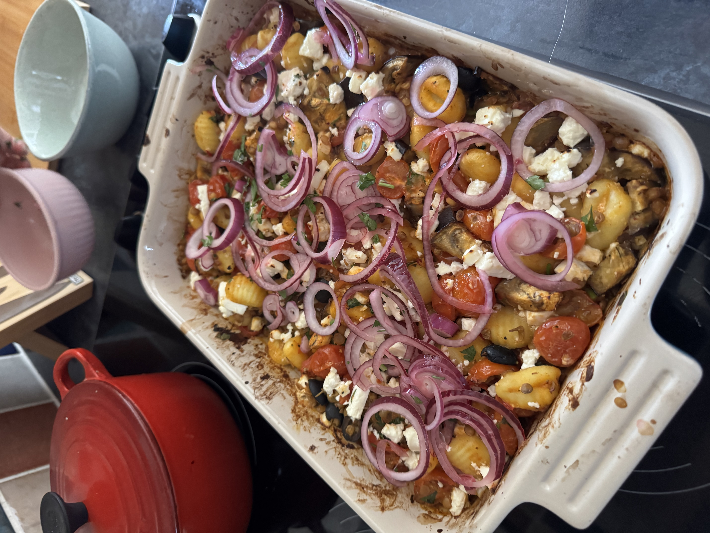

Greek Gnocchi Traybake
All the flavours of a Greek salad in a comforting traybake. You can make a big batch and it'll last almost the whole work week. Just reheat in the microwave. Bursting with flavour and comfort. Perfect for a taste of the mediterranean in the winter.

Ingredients (4 servings)
- 1 Lemon
- 3 tbsp Olive Oil
- 2 tsp Dried Oregano
- 2 Garlic Cloves
- 1 ½ tbsp Harissa Paste
- 1 x 400g Can Cooked Puy Lentils
- 500g Gnocchi
- 400g Cherry Tomatoes
- 1 Aubergine
- 1 Red Onion
- 200g Feta Cheese
- 150g Mixed Olives
- Handful of Parsley
- Handful of Fresh mint
Instructions
- Heat the oven to 200°C.
- Zest the lemon, juice ½ the lemon and grate the garlic into a bowl. Add the olive oil, dried oregano, harissa and a pinch of salt and pepper. Whisk together to combine
- Halve the cherry tomatoes and dice the aubergine into 2cm pieces. Add the veggies to a baking tray then drizzle with a little olive oil and season with salt and pepper. Mix together to coat then slide into the oven to roast for 15 mins.
- Meanwhile, finely slice the red onion and add to a bowl along with the remaining lemon juice. Season with salt then set aside to lightly pickle.
- Drain and rinse the lentils. Add the lentils, gnocchi and olives to the pan with the par-roasted veggies then pour over the prepared harissa dressing. Give everything a good mix then return to the oven for another 10 mins. Crumble over the feta then return to the oven for a final 5 mins until the feta is softened and slightly charred.
- Divide between bowls then top with the fresh herbs, pickled onions and a drizzle of olive oil.
Back home